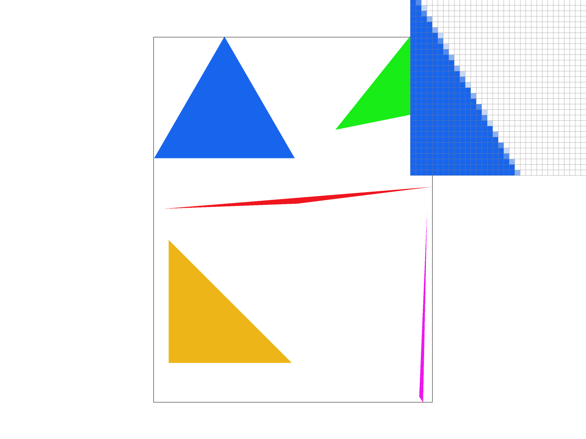
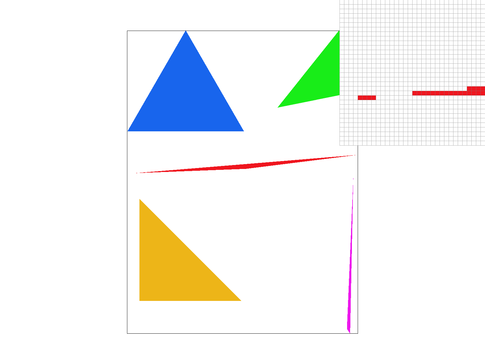
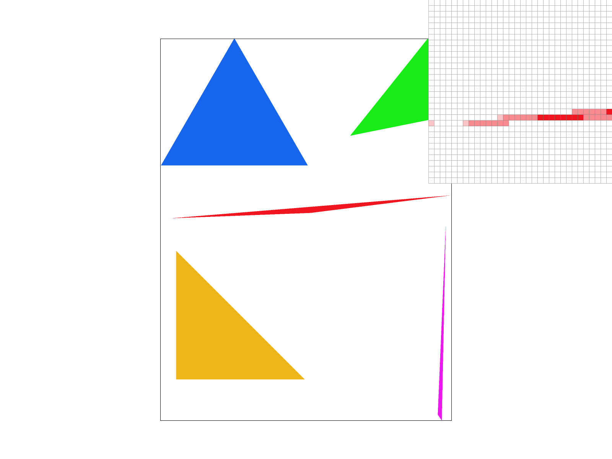
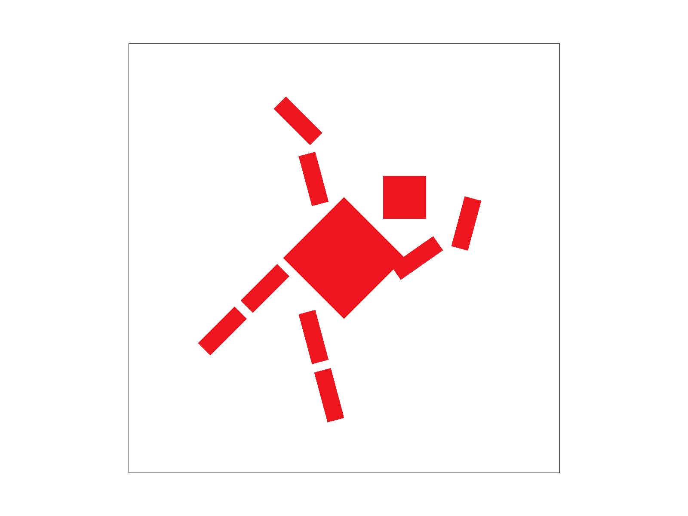
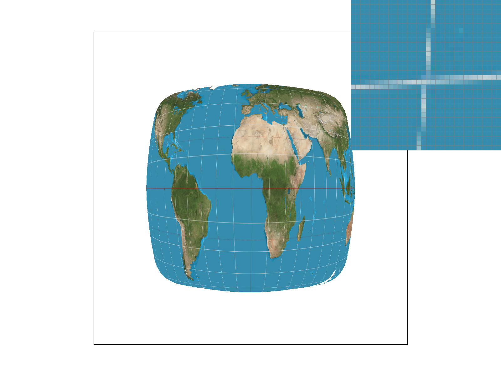
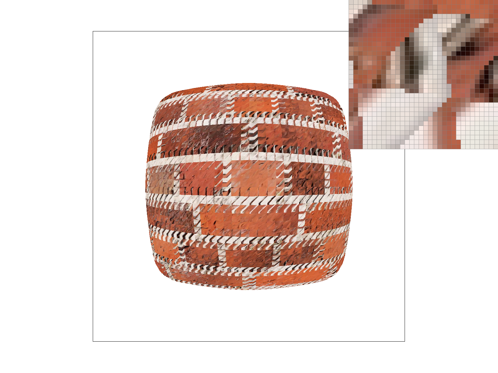
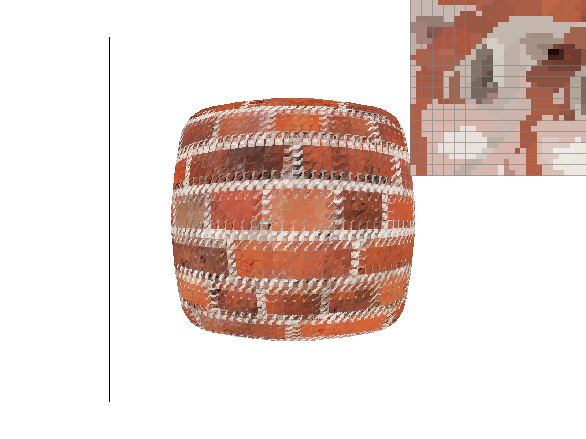
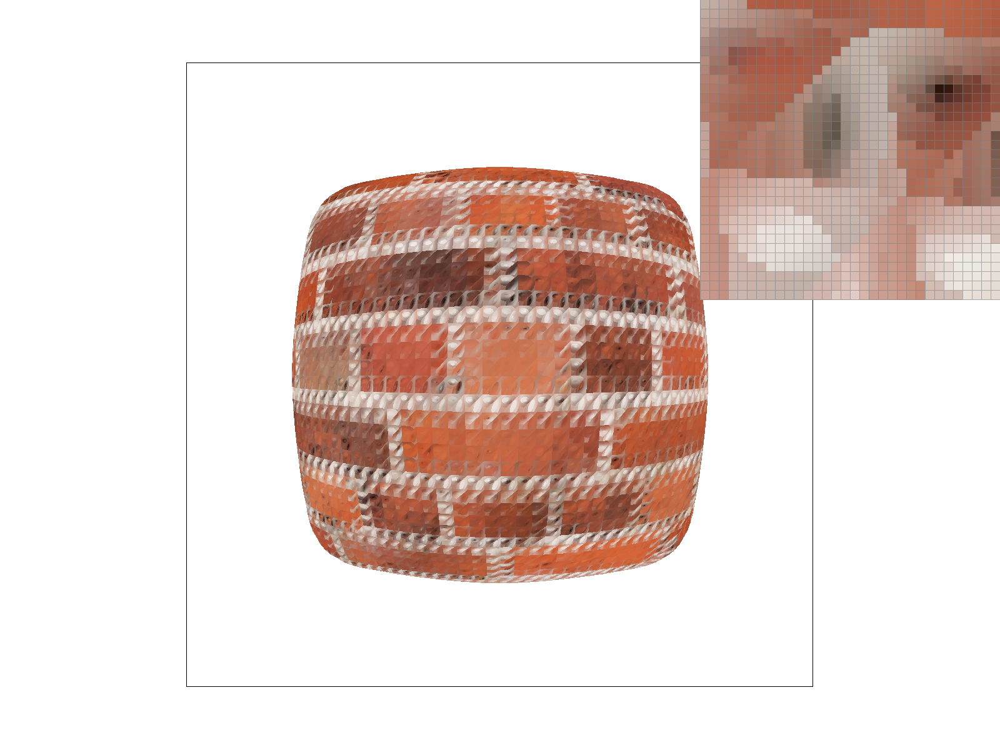

Overview
This assignment was about building a functional software rasterizer in stages of increasing complexity. From drawing basic single-color triangles to altering data structures to support anti-aliasing via supersampling, to matrix-transforming hierarchical vector elements, to finally implementing barycentric coordinates and comparing various pixel sampling and level sampling techniques. I learned how important barycentric coordinates are in both blending color and mapping 2D images onto 3D surfaces, and also how dramatically each sampling technique changed the final result.
Task 1
To rasterize triangles, I first established my bounds: I found the minimum and maximum x and y values from the three given vertices (rounded to the nearest integer), and also made sure to bound with the screen dimensions so as to not check pixels outside the screen. Then, I wrote a function that checks whether a given pixel is inside the triangle using the three-line test: essentially checking if the point is on the correct side of each of the three lines of the triangle. Since the triangle could be drawn clockwise or counterclockwise, I wrote this function to check for either condition. Finally, I wrote a nested for-loop to iterate through the (x,y) coordinates within the bounds to check if each pixel should be colored or not with fill_pixel.
This algorithm is checking each sample within the smallest rectangle that includes the triangle because I set up the bounding box to be based on the min and max of each vertex's coordinates.

Task 2
To supersample, I updated my data structures to dynamically resize sample_buffer to hold width, height, and sample_rate. I also updated rasterize_triangle with two inner loops to iterate over a square grid with a dimension equal to the square root of the sample rate for each sub-pixel. Inside the loops, I evaluated the same line equations to determine if the sub-pixel was inside the triangle, then I saved the triangle's color into the corresponding high resolution index within sample_buffer. To make sure everything was rendered correctly, I made sure fill_pixel would fill all sub-pixels. Since this makes sample_buffer larger than the screen, I downsampled the image, averaged each pixel's sub-pixel RGB values together, and assigned that blended color to rgb_framebuffer_target.
This is useful because I was able to antialias my triangles by averaging the colors along the boundaries. For example, if within a single pixel, some sub-pixels contain the red edge of a triangle and some don't, that pixel's color will be averaged to be a lighter red, making that edge appear much softer. As a result, the triangles edge is more continuous and correctly placed, as shown in the below diagrams:
|
 Sample rate 1
|
 Sample rate 4
|
Sample rate 16
|
At a sample rate of 1, the corner of the red triangle is jagged and disconnected because the algorithm only takes one sample per pixel, assigning it to red or white. At a sample rate of 4, the algorithm averages the four subpixel RGB values and assigns the disconnected gaps of the triangle to a lighter red rather than white. At 16 samples per pixel, the effect multiplies and the corner looks smoother than it did in the previous rates.
Task 3
Here is cubeman starting a cartwheel, leaning heavily to the right with its arms up in motion and a leg kicked back.

Task 4
Barycentric coordinates are essentially a coordinate system for triangles where each point (x,y) is instead represented by a weighted average of the triangle's vertices. We can use this coordinate system to smoothly blend color across the triangle by assigning the barycentric coordinates (alpha, beta, gamma) to the percentage of RGB (red, green, blue) that each point of the triangle should have.
To calculate this representation, first I wrote line equations for each edge of the triangle:
L₁(x, y) = -(y₀ - y₂)x + (x₀ - x₂)y + (x₂y₀ - x₀y₂)
L₂(x, y) = -(y₁ - y₀)x + (x₁ - x₀)y + (x₀y₁ - x₁y₀)
Next, I normalized the weights by evaluating the line equations at the opposite vertices so that they sum to 1:
L₁(x₁, y₁) = -(y₀ - y₂)x₁ + (x₀ - x₂)y₁ + (x₂y₀ - x₀y₂)
L₂(x₂, y₂) = -(y₁ - y₀)x₂ + (x₁ - x₀)y₂ + (x₀y₁ - x₁y₀)
I divided the line equations by the normalized weight equations to get proportional weights, where (α, β, γ) are barycentric coordinates.

β = L₂(x, y) / L₂(x₂, y₂)
γ = L₀(x, y) / L₀(x₀, y₀)
Each of these proportional weights represents how red, green, or blue a pixel should be. Thus a triangle with this coordinate system can be colored with red, green, and blue at each vertex and smooth gradients in between as the proportional weights shift with the position:
Task 5
Pixel sampling is looking up the specific color data of a 2D image at each pixel to figure out what color to fill it with. This can be tricky, as a 3D triangle won't usually be an exact match as the 2D texture mapped onto it. I implemented texture mapping by calculating the barycentric coordinates, linearly interpolating the exact texture coordinates from the 3D triangle, and scaling by the width and height of the full-resolution texture. This allowed me to find the exact location of each pixel on the image, so I could use either nearest sampling or bilinear sampling.
Nearest-pixel sampling is the simpler method. It takes the continuous, scaled coordinate, rounds it to the nearest integer, and returns the color of the closest texture pixel. Here is a comparison of nearest pixel sampling at 1 sample and at 16 samples per pixel:
|
Nearest sampling, sample rate 1
|
 Nearest sampling, sample rate 16
|
Instead of choosing the nearest texture pixel's color, bilinear sampling finds the four closest texel centers, calculates how far each one is, and uses 1D linear interpolation (three times) to smoothly transition between the colors of each. Here is a comparison of bilinear sampling at 1 sample per pixel and 16 samples per pixel:
|
Bilinear sampling, sample rate 1
|
Bilinear sampling, sample rate 16
|
Even at 1 sample per pixel, it is much smoother than either of the above nearest-pixel sampling transitions. The difference is especially noticeable when zoomed into sharp lines because nearest sampling looks blocky while bilinear sampling will blur the line even at a sample rate of 1.
Task 6
Level sampling is an efficient texture anti-aliasing technique where a high resolution texture can be mapped onto a smaller object. Instead of sampling and averaging each texel, level sampling pre-computes the low-pass filtered versions of the texture.
To implement this, I first approximated how much texture space a screen pixel covered, and found the barycentric coordinates for a step of one pixel in the x and y directions. This way I could find the partial derivatives of texture coordinates over x,y coordinates to calculate the jacobian: (du/dx, dv/dx) and (du/dy, dv/dy). I calculated the correct mipmap level to use with the formula:
Next, I updated Texture::sample for each level sample method:
- L_ZERO: I hard coded this to sample from the 0th MipLevel (full resolution).
- L_NEAREST: Rounded my D value to the nearest integer, made sure it was within the bounds of the precomputed levels, and passed it to my pixel sampling functions.
- L_LINEAR: I used the continuous level D and found the two closest integer mipmap levels, sampled a color from each, then used linear interpolation to get the weighted sum.
Now, we can compare the tradeoffs of these techniques.
Pixel Sampling
Nearest sampling is faster because it only needs to fetch a single texel while bilinear fetches 4 texels and computers 3 linear interpolations. Both use the same amount of memory since the read from the pre-loaded texture. Nearest sampling has more jagged edges, so bilinear sampling has better antialiasing power as it smooths the texture much more effectively.
Level Sampling
Level sampling is much faster than pixel sampling because the renderer fetches from a small texture map rather than jumping to each pixel of a full-resolution image, but it requires more memory because it stores the hierarchy of downsampled images. It has good antialiasing power because it matches the sampled texture resolution to the screen sampling rate, and has no visible borders between mipmap levels.
Number of Samples Per Pixel
Otherwise known as supersampling, this is definitely the slowest technique, since increasing the sample rate to 16 means the computations also increase by a factor of 16. Each calculation is done per single pixel. It also uses the most memory because of the dynamic resizing of the sample_buffer (which scales linearly with sample rate). However, it is the best at antialiasing because it smooths both edges and textures very effectively.
Comparison Examples
|
L_ZERO and P_NEAREST
Moire patterns, very scrambled |
 L_ZERO and P_LINEAR
Blurred scrambles, texture is too high res for the space |
|
 P_LINEAR, L_NEAREST
No moire patterns, low res mipmap in use |
 L_NEAREST and P_LINEAR
No moire, smooth colors |